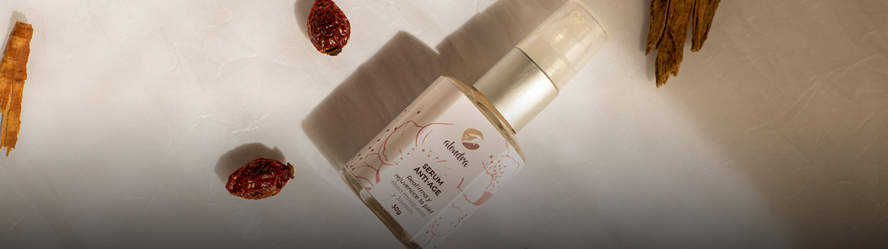
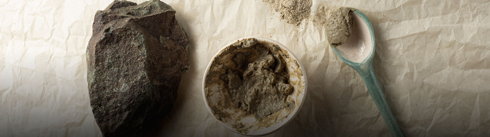

COSMÉTICA NATURAL

CRUELTY FREE

Con mis productos busco el equilibrio en el órgano más grande del cuerpo, la piel.
Todos los productos son elaborados con materias primas naturales, amigables con el medio ambiente y el ser humano.
"Pequeños cambios hacen grandes diferencias"